Key Takeaways
- Windows 365 now provides a Developer Configuration image with Microsoft 365 Apps.
- The image is currently available as a public preview.
- The image can be selected directly from the Windows 365 PC OS image gallery.
- Microsoft 365 Apps are included in the new Developer Configuration image.
In this post we are discussing Configure Windows 365 Developer Configuration with Microsoft 365 Apps using Intune. Microsoft has introduced an updated Windows 11 Enterprise Developer Configuration image for Windows 365 Cloud PCs that now includes Microsoft 365 Apps. This image is available as a public preview option in the Windows 365 image gallery and is designed to provide users with a ready-to-use Cloud PC environment.
Table of Contents
Configure Windows 365 Developer Configuration with Microsoft 365 Apps using Intune
The Developer Configuration image helps organizations provide a consistent development environment without requiring administrators to manually prepare every Cloud PC with the required applications and configurations. By selecting the image during Windows 365 provisioning policy creation, administrators can provision Cloud PCs with the developer-focused configuration already included. The new image appears in the Windows 365 provisioning policy image gallery as Windows 11 Enterprise Developer Configuration + Microsoft 365 Apps (preview).
Configure Windows 365 Developer Configuration Image with Microsoft 365 Apps
Sign in to the Microsoft Intune admin center using an account that has the required permissions to manage Windows 365 Cloud PCs. From the Intune admin center, navigate to Devices and select Provision Cloud PCs.
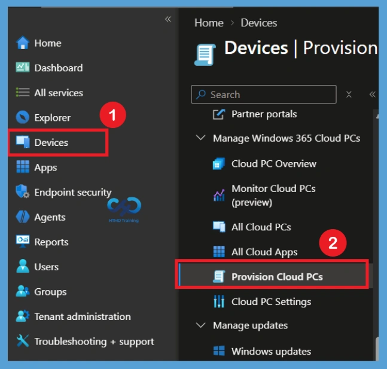
On the Provisioning policies page, select Create policy to start creating a new Windows 365 provisioning policy. The policy will define the configuration that is applied when Cloud PCs are provisioned for assigned users.
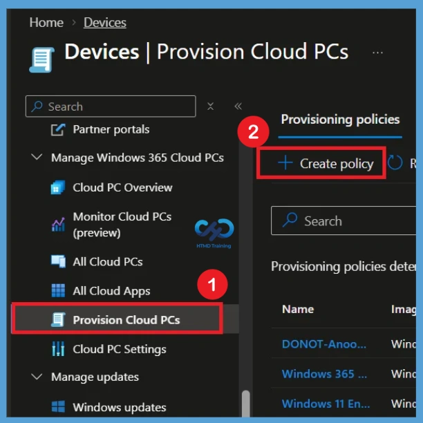
Configure the General Settings
In the General section, enter a suitable name and description for the Windows 365 provisioning policy. For this configuration, use Windows 365 Developer Configuration with M365 Apps as the policy name and provide a description explaining that the policy provisions Windows 365 Cloud PCs with the Windows 11 Enterprise Developer Configuration image and Microsoft 365 Apps for development and testing purpose.
- Under Experience, select Access a full Cloud PC desktop and set the License type to Enterprise.
| General Settings | Info |
|---|---|
| Name | Windows 365 Developer Configuration with M365 Apps |
| Description | This provisioning policy is used to provision Windows 365 Cloud PCs with the Windows 11 Enterprise Developer Configuration image, including Microsoft 365 Apps, for developers and testing purposes. |
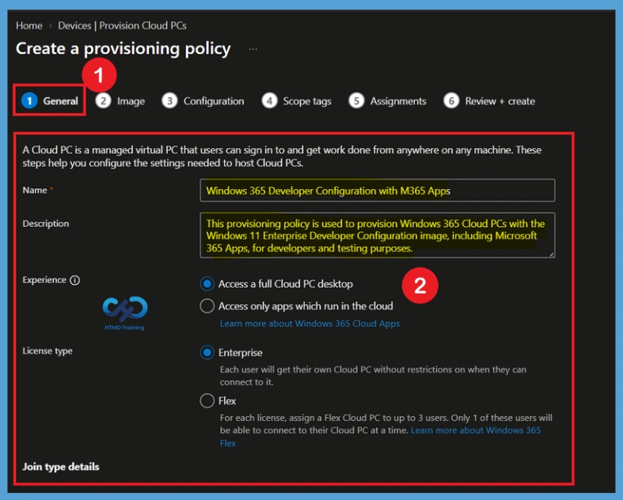
Under Join type details, select Microsoft Entra Join, choose Microsoft hosted network, select the required Geography and Region groups or regions, and leave Use Microsoft Entra single sign-on unchecked if SSO is not required. After filling necessary details Click Next to continue.
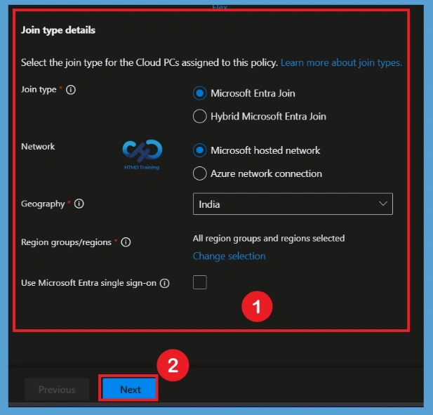
Select the Developer Configuration Image
In the Image section, set the Image type to Gallery image. Click “Select an image” to open the PC OS image gallery and choose Windows 11 Enterprise Developer Configuration + Microsoft 365 Apps (preview) with the required Windows version, such as 25H2.
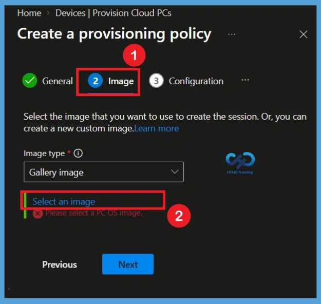
when you click on the Select an image option you will get different options. Choose Windows 11 Enterprise Developer Configuration + Microsoft 365 Apps (preview). Also, you can see that options like Windows 11 Enterprise + Microsoft 365 Apps, Windows 11 Enterprise(25H2) and Windows 11 Enterprise + Microsoft 365 Apps, Windows 11 Enterprise(24H2).
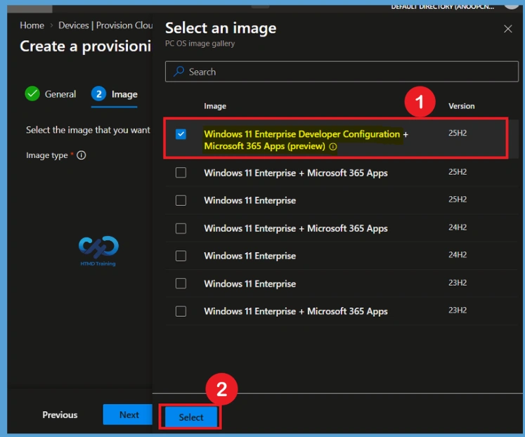
After selecting the Developer Configuration image, verify that the selected image is displayed under the Image section. This image provides the developer-focused Windows environment together with Microsoft 365 Apps. Click Next to continue to the Configuration section.
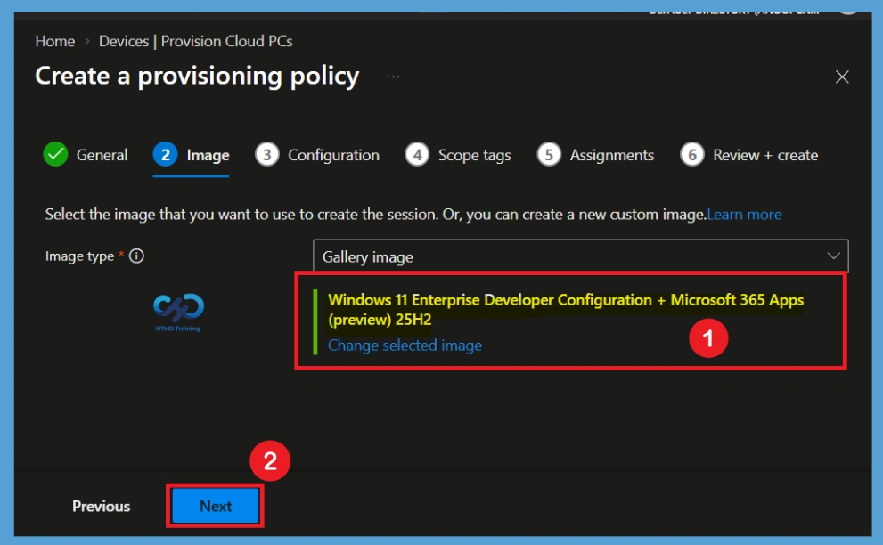
Configure Windows Settings
In the Configuration section, configure the Windows settings for the Cloud PC. Under Language & Region, select the required language and regional settings, such as English (United States). You can also configure Cloud PC naming by enabling Apply device name template if your organization requires a specific naming convention.
The Windows Autopilot section allows you to associate an Autopilot Device preparation policy with the Cloud PC provisioning process. If no device preparation policy is required, keep the Autopilot Device preparation policy set to None. After reviewing the available settings, click Next.
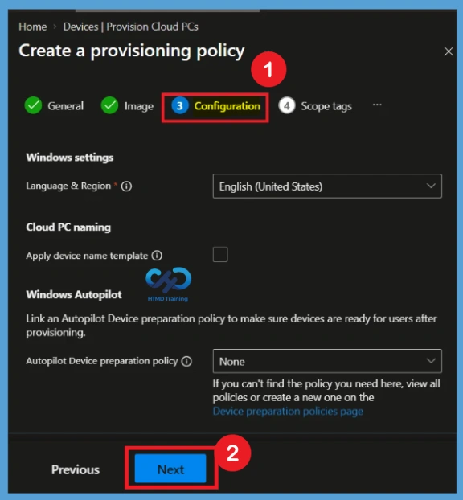
In the Scope tags section, configure the scope tags that should be associated with the provisioning policy. The Default scope tag is available by default, and you can select additional scope tags if the policy needs to be managed by administrators within a specific scope. Here I selected such as London scope tag, along with the Default scope tag. Click Next to continue
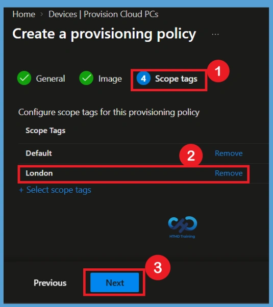
Configure Assignments
For this Assignments configuration, assign the policy to the HTMD CPC – Test group. Only users who meet the Windows 365 licensing requirements and are included in the assigned group will be provisioned with Cloud PCs based on the settings defined in this policy. Click Next after adding the required group.
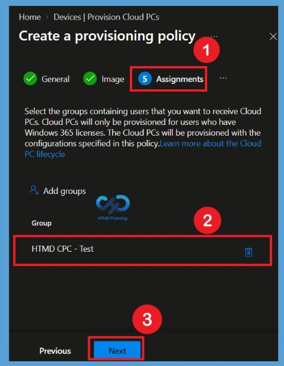
Review and Create the Policy
n the Review + create section, review all the settings configured for the provisioning policy. Verify the policy name, description, Cloud PC experience, license type, join type, geography, selected Developer Configuration image, Windows settings, scope tags, and group assignments. Once you have confirmed that all settings are correct, select Create to create the Windows 365 provisioning policy.
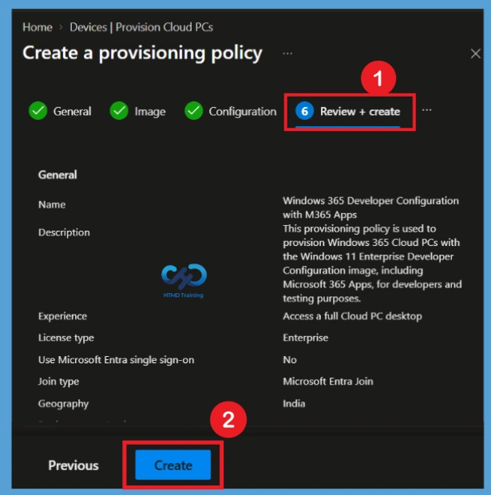
Need Further Assistance or Have Technical Questions?
Join the LinkedIn Page and Telegram group to get the latest step-by-step guides and news updates. Join our Meetup Page to participate in User group meetings. Also, join the WhatsApp Community and the Whatsapp channel to get the latest news on Microsoft Technologies. We are there on Reddit as well.
Author
Anoop C Nair is Workplace Technology solution architect with 25+ years of experience in global enterprise organizations such as JP Morgan, Capgemini, etc. He is Microsoft Certified Trainer. Microsoft MVP from 2015 onwards for consecutive 11 years! He also conducts Intune and modern workplace tech training for enterprise organizations. He is Blogger, Speaker, and Founder of HTMD Community and HTMD Conference. His focus is on Device Management technologies such as Intune, Windows, Cloud PC. He writes about technologies like Intune, SCCM, Windows, Cloud PC, Windows, Entra, Microsoft Security.